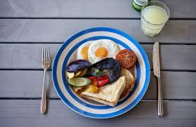

Check Out Our Menu
Efo Riro
1)What is the default colour of a link when it is i)Unvisited (ii)Visited (iii)Active 2)How do you link to an element with a specified id within a page? 3)Modify your about.html file to reflect a real restaurant 4)Modify the menu.html file to reflect a real restaurant 5)Modify your footer code to link to Twitter
Gizdodo
1)What is the default colour of a link when it is i)Unvisited (ii)Visited (iii)Active 2)How do you link to an element with a specified id within a page? 3)Modify your about.html file to reflect a real restaurant 4)Modify the menu.html file to reflect a real restaurant 5)Modify your footer code to link to Twitter
Porridge

1)What is the default colour of a link when it is i)Unvisited (ii)Visited (iii)Active 2)How do you link to an element with a specified id within a page? 3)Modify your about.html file to reflect a real restaurant 4)Modify the menu.html file to reflect a real restaurant 5)Modify your footer code to link to Twitter